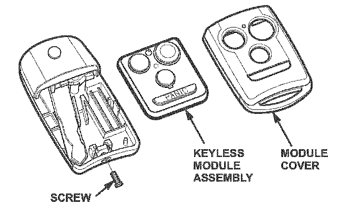
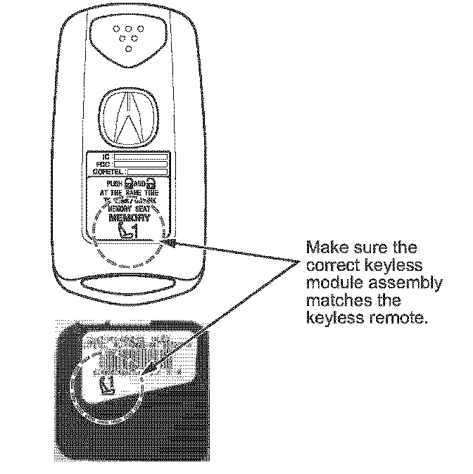
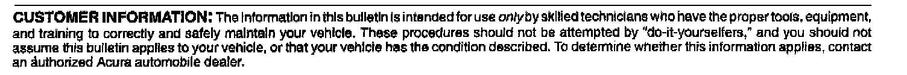

Keyless Entry - Remote Transmitter Inoperative
07-046August 17,2007
Applies To:
2007 MDX- From VIN 2HNYD28..7H500001 thru 2HNYD28..7H513448
Remote Transmitter Does Not Work
SYMPTOM
The buttons on the keyless module do not work.
PROBABLE CAUSE
The battery doesn't fit properly in its housing, causing corrosion to build up on the contacts.
CORRECTIVE ACTION
Replace the keyless module assembly (battery pack) in the remote transmitter.
PARTS INFORMATION
Keyless Module Assembly:
P/N 72147-STX-A01 - Memory Driver 1
P/N 72l47-STX-A21 - Memory Driver 2
P/N 72147-SIX-A11 - Memory Driver 1
(with power tailgate)
P/N 72147-STX-A31 - Memory Driver 2
(with power tailgate)
WARRANTY CLAIM INFORMATION
In warranty:
The normal warranty applies.
Operation Number: 7451A8
Flat Rate Time: 0.2 hour
Failed Part: P/N 72147-STX-A01
Defect Code: 03217
Symptom Code: 01201
Template ID: 07-046A (Memory Driver 1)
07-046B (Memory Driver 2)
07-046C (Memory Driver 1 with
power tailgate)
07-046D (Memory Driver 2 with
power tailgate)
Skill Level: Repair Technician
Out of warranty:
Any repair performed after warranty expiration may be eligible for goodwill consideration by the District Parts and Service Manager or your Zone Office. You must request consideration, and get a decision, before starting work.
REPAIR PROCEDURE

1. Remove the Phillips-head screw at the top of the remote.
2. Lift and remove the module cover with the keyless module assembly from its base.
3. Remove the keyless module assembly (battery pack) from the module cover by either gently prying it out or pushing it out from the button side.

4. Install the new keyless module assembly. Check the back side of the remote transmitter or keyless module assembly to determine if you are replacing driver 1 or driver 2 (use applicable chart for P/Ns).
5. Reassemble the remote transmitter.
6. Program the updated remote transmitter.
^ Refer to page 22-147 of the 2007 MDX Service Manual, or
Online, enter keyword PROGRAMMING, then
select Manual Keyless Transmitter Programming/Deleting from the list.
NOTE:
The keyless module is separate from the immobilizer transponder. Do not replace or delete an existing keyless transmitter with the HDS.
[NOTICE]
During programming, pushing the transmitter's button more than once may push other remotes out of the memory. In other words, pushing the same remote's button 6 times will delete all other remotes.
7. Link the remote transmitter to the vehicle.
8. Make sure the remote transmitter works by locking and unlocking the doors with it.

Disclaimer